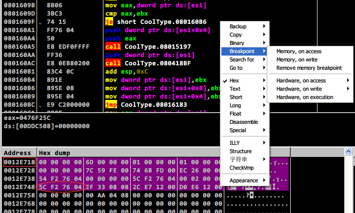

<!DOCTYPE html>
<html>
<head>
<meta http-equiv="content-type" content="text/html; charset=UTF-8" />

<title>CVE-2010-2883 Analysis</title>
<link rel="stylesheet" type="text/css" href="style/normalize.css" media="screen">
<link rel="stylesheet" type="text/css" href="style/stylesheet.css" media="screen">
<link rel="stylesheet" type="text/css" href="style/github-light.css" media="screen">
<link rel="stylesheet" type="text/css" href="style/menu.css" media="screen">
<link rel="stylesheet" type="text/css" href="style/special.css" media="screen">
</head>
<body>
<!-- 文章导航条 -->
<nav class="nav">
	<ul>
		<li class="current"><a href="http://www.ahageek.com/">首页</a></li>
		<li><a href="http://www.ahageek.com/blog/blog-index.html">文章目录</a></li>
	</ul>
</nav>
<!--文章标题-->
<section class="page-header">
      <h1 class="project-name">CVE-2010-2883 Analysis</h1>
      <!--<h2>SUBTITLE</h2>-->
      <h3 class="project-tagline">2017-07-22 by Bugnofree</h3>
</section>
<!--文章概览-->
<!--<div class="treebox">-->
    <!--<ul class="tree">-->
        <!--<li><a>一级标题</a>-->
            <!--<ul>-->
                <!--<li><a>二级标题</a>-->
                    <!--<ul>-->
                        <!--<li><a>三级标题</a></li>-->
                        <!--<li><a>三级标题</a></li>-->
                        <!--<li><a>三级标题</a></li>-->
                    <!--</ul>-->
                <!--</li>-->
                <!--<li><a>二级标题</a></li>-->
            <!--</ul>-->
       <!--</li>-->
    <!--</ul>-->
<!--</div>-->
<!--以下开始写文章-->
<!--=================================================================-->
<!--背景信息-->
<h3 class="text3d">背景 && 摘要</h3>
<p>想挖些漏洞,所以开始往这方面靠拢.于是最近买了一本书,名字叫:漏洞战争.</p>
<p>书很厚,翻看翻看,一个很大疑问就是:难道大佬都是看看走走就搞定理解了这么牛擦的漏洞????</p>
<p>如果你看这个 CVE-2010-2883 也有点懵逼,OK,Just follow me!</p>

<h3 class="text3d">环境</h3>
<p>主机: Ubuntu 16.04 x64 虚拟机:Windows XP SP 3 x32(漏洞重现) + Adobe Reader 9.3.4</p>
<p>调试工具:OllyDbg 1.10 + IDA Pro 6.8</p>
<hr/>
<!--正文-->
<h1 class="titlebar">借助 msf 生成 exploit 样本</h1>
<p>安装 kali linux 后借助 msf 生成样本 pdf 来研究.</p>
<pre class="code">
search cve-2010-2883
use exploit/windows/fileformat/adobe_cooltype_sing
set filename cve20102883.pdf
set payload windows/exec
set cmd calc.exe
show options
exploit
cp /root/.msf4/local/cve20102883.pdf /media/sf_Downloads/
</pre>
<p>如下图所示:</p>

<p>当我们使用 Adobe Reader 9.3.4 打开该文件时,尽管会提示出错,但是还是能够成功执行,如下图所示:</p>

<p>pdf你可以来 <a href="./cve20102883.pdf">这里</a>下载.</p>


<h1 class="titlebar">pdf 文件格式</h1>
<h2>PDF 的基本组成</h2>
<p>pdf 的文件格式由四部分组成:</p>

<ul>
    <li><b>文件头</b>
    <p>文件头是 PDF 文件的第一行,指明了 PDF 文件的版本号,通常格式为 <b class="term"> %PDF-1.x </b>,
    其中 x 为 1~7.</p>
    </li>

    <li><b>主体</b>
    <p>这是 PDF 文档的主题部分,题目通常由对象文件组成,对象文件包含有文本流,图片以及其他的多媒体文件等等.</p>
    </li>

    <li><b>交叉引用表</b>
    <p>交叉引用表包含了对文档中所有对象的引用,其目的是使得处理 PDF 时可以随机访问对象.
    每一个对象在交叉引用表中占据一项.</p>
    <p>现在让我们来看一个交叉引用表实例,用文本编辑器打开 PDF 文档,
    翻到最后面,得到下面这样的交叉引用表:</p>
    
    <center>PDF 交叉引用表</center>
    </li>
    <p>交叉引用表以 <b class="term">xref</b> 开头,单独占据一行.  </p>
    <p>一个 PDF 文档可能有多个子节区(subsection),而示例中的 PDF 只有一个子节区.
    所以接着的一行表示该 PDF 文档字节区中对象的起始编号,以及节区中包含的对象数.
    示例中表示本子节区对象的起始编号为 0,包含的对象个数为 15 个,
    对象编号按照行依次递增,也就是说第二行表示的对象的编号为 1.</p>


    <p>接着的 15 行为每一个对象的属性描述(此处称之为对象属性行).
    对象属性行的长度固定为 18 字节(不包括换行符),
    我们看到一共分为三列,第一列表示对象在 PDF 中的文件偏移(使用中的对象属性行),
    第二列表示对象的生成号,第三列用 <b class="term">f</b> 表示 free(空闲) 或者 <b class="term">n</b>  表示 used(使用中).
    </p>
    <p>属性行中第一行和最后一行比较特殊,第一行对应的对象 ID 为 0,包含的生成号总是 65535,
    位于空闲对象链表的首部.而最后一行中的生成号总是 0.</p>

    <p>对于空闲属性行,第一列表示下一个空闲对象的编号,所有的空闲对象正好构成一个空闲单向环形链表,
    也就是说空闲链表的最后一个元素指向第一个空闲对象(也就是编号为 0 的对象).
    对于该示例 PDF,由于只有一个空闲对象,所以第一列的值为 0.</p>

    <p>看属性行中的第二行,也就是 <b class="term">0000000015 00000 n</b>,
    表示第一个对象位于文件偏移 15 处(它的值就是十进制的,不是十六进制),生成号为 0 ,非空闲.</p>

    <li><b>文件尾</b>
    <p>PDF 文件尾部指明了 PDF 文档的相关信息以及交叉引用表的位置.
    所有的 PDF 阅读工具都应该先读取 PDF 文档尾.</p>
    <p>示例中的文件尾部对象如下:</p>
    
    <center>PDF 文件尾结构</center>
    <p> PDF 文档中可以指定变量名称,变量名称由 0x21 - 0x7E 范围内的 ASCII 码组成.
    每一个字符也可以用 #xx 来表示(xx表示字符的十六进制值).
    这里就是 <b class="term">/Size</b>, <b class="term">/Root</b>,
    声明部分用 <b class="term">&lt;&lt;</b> 以及 <b class="term">&gt;&gt;</b> 包起来.接着是尾部的具体内容,
    它只有一个 <b class="term">startxerf</b> 指明交叉引用表的偏移值.</p>
    </li>
</ul>
<h2>PDF 对象结构</h2>
<p>一个 PDF 对象,看起来像下图这样:</p>

<center>PDF 对象结构</center>
<p>其第一行有对象编号,生成数以及 <b class="term">obj</b>组成.
然后是 <b class="term"> &lt;&lt;</b>和 <b class="term">&gt;&gt;</b> 包括起来的键值对.
最后是数据部分.</p>


<h2>PDF 增量保存</h2>
<p>当你对一个 PDF 文件执行 <b class="teram">Save(保存)</b>操作时,
新添加到 PDF 的信息将会附加到原有 PDF 的文件末尾,这些信息主要由三部分组成:
<b class="term">body changes,xref,trailer</b>.如下图所示: </p>
<p>
<p>因此当我们多次执行 Save 操作的时候会增大 PDF 的大小.  </p>
<p>然而,当我们执行 <b class="term">Save as(另存为)</b> 时,
PDF 工具应当将所有的更新信息合并成一个新的完整的 PDF,这样可能在一定程度上减少 PDF 的大小.</p>


<h1 class="titlebar">漏洞分析</h1>
<h2> TTF 格式介绍 </h2>
<p>根据微软官方给出的 TTF 格式文档所说:All TrueType fonts use Motorola-style byte ordering (Big Endian),
我们可以知道 TTF 字体所采用的为大端序.而 TTF 字体开始是表目录,表目录的结构如下所:
</p>

<center>TTF 表目录头结构</center>
<p>表目录头占了 12 字节,然后就是表目录项,表目录项的结构如下:</p>

<center>TTF 表目录项结构</center>
<p>通过 <a href="http://sandsprite.com/blogs/index.php?uid=7&pid=57">PdfStreamDumper</a> 将字体转储之后,
用十六进制编辑器打开查看,如下图:</p>

<center>TTF 实例结构</center>
<p>先说一下制作这个图时发生的一个有趣的事情,本来我是在 vim 中打开该字体文件,
然后使用 xxd 来查看十六进制的,但是后来调试的时候发现十六进制居然不对,比如图中的 SING表偏移,
居然显示成 <b class="term">00 00 1d 3f</b>,本来应该是 <b class="term">00 00 1d df</b>,
弄了半天也不知道为啥,后来在 QQ 群里问了一下,
有人说应该用 <b class="term">-b</b>选项打开二进制文件.试了一下果然如此,后来查了一下原因,
大概是这样的: vim 对文件内容会按照自己的编码(set fileencodings)来对内容进行解码,
当 vim 遇到不在指定编码范围内的的十六进制值时就会显示成问号(?),其十六进制是 0x3f.
当以二进制模式打开文件时,就会避免这个问题.所以正确的方法是先用 <b class="term">gvim -b file</b>打开文件,
然后再用 xxd 转换为 16 进制查看.一种比较好的方式就是先在命令行使用 xxd 生成一个十六进制形式的文本文件,
然后再用 gvim 打开,这个就此打住,让我们回归正题.</p>

<p>当 adobe 阅读器打开 pdf 的时候,会在处理 SING 表目录项的时候发生栈溢出,
至于漏洞作者是咋发现是这个地方那就真不知道了.不过现在我们是来分析这个漏洞的,
就不管这些了.</p>

<p>用 IDA 打开 CoolType.dll,然后在字符串窗口中搜索 SING 字符串,找到该字符串后,
单击进入,然后交叉引用查看,如下图:</p>


<center>定位关键代码位置</center>
<p>上面第二个交叉引用就是关键代码所在的地方.接着打开 OD,载入 Adobe Reader,
进入到模块 CoolType.dll,并在上面的关键代码的地方下上断点,然后在 Adobe Reader 中打开我们生成的 PDF,
稍等一段时间,就可以在断点处停下来了.</p>
<p>漏洞代码如下所示:</p>

<center>漏洞代码</center>
<p>我们可以看到,这块儿有两个函数,第一个函数是未知函数.
很多时候,我们只是想知道一个函数大致是做什么工作的.
怎么处理呢?我目前的处理方法就是: <b>猜测+观察前后寄存器值的变化+感兴趣的内存区域值的变化</b>.</p>
<p>单看第一个函数,第一个参数是 edi,第二个参数是一个字符串 "SING",还通过 ECX 传入一个 this 指针.
我们猜测是处理 SING 表目录项,这是合理的,因为我们在图 <b>TTF实例结构</b>中看到了这个表目录项,
所以呢这是一种合理的猜测.那么我们感兴趣的就是 edi 和 this 指针(姑且认为是this指针吧)的值了.在函数执行前后,
我们记录下它们的值以及它们指向的内存的值(可以取所值内存的前 8 个字节),同时呢,也记录下寄存器的值.
函数调用前后寄存器的值对比如下:</p>

<pre>
前            后
<b>EAX 00000000  EAX 0012E4B4</b>
<b>ECX 0012E4B4  ECX 5AC7A0A2</b>
EDX 0823A650  EDX 0823A650
EBX 0012E608  EBX 0012E608
<b>ESP 0012E468  ESP 0012E470</b>
EBP 0012E4D8  EBP 0012E4D8
ESI 00000000  ESI 00000000
EDI 0012E718  EDI 0012E718
<hr/>
d ecx(前,this指针地址):
0012E4B4  <b>5C F2 76 04 38 07 E6 00</b> 00 00 00 00 00 00 00 00  \騰8?........
0012E4C4  CC B9 87 00 70 E4 12 00 0C E7 12 00 54 4A 18 08  坦?p?..?.TJ
d eax(后,this指针地址):
0012E4B4  <b>44 D9 77 04 DF 1D 00 00</b> 00 00 00 00 00 00 00 00  D賥?..........
0012E4C4  CC B9 87 00 70 E4 12 00 0C E7 12 00 54 4A 18 08  坦?p?..?.TJ
<hr/>
d edi(前):
0012E718  00 00 00 00 6D 00 00 00 01 00 00 00 01 00 00 00  ....m.........
0012E728  00 00 00 00 7C 59 FE 00 74 6B FD 00 EC 26 00 00  ....|Y?tk??..
d edi(后):
0012E718  00 00 00 00 6D 00 00 00 01 00 00 00 01 00 00 00  ....m.........
0012E728  00 00 00 00 7C 59 FE 00 74 6B FD 00 EC 26 00 00  ....|Y?tk??..
</pre>

<p>前后一对比,抛去 ESP 不用管,我们便可知道,重点在于 EAX,ECX(this指针).
我们知道 x86 汇编中,返回值一般存放在 EAX 中,那么这里就说明,函数执行完后,
返回了 this 指针.那么 ECX 是什么用处呢? 当我们往下看汇编时发现,
EAX 和 ECX 马上被赋值了,也就是它们本身都没被用到,所以我们甚至连管都不用管它们了.
然而需要注意的是,函数调用前传递进入的 ecx,其值是 this 指针的地址,
而函数调用后,使用了 this 指针的值,将该值放入到 eax 中去了.
我们注意到 this 指针所指内存中的前 8 个字节发生了编号,而函数执行完后,
边将前 4 个字节放入到了 eax 中,那么这前四个字节是什么意思呢?
显然它们不是有意义的 ASCII 字符串,那么我们看一下它是否指向某个内存,如果是的话,
内存处的值是什么?初此之外,后四个字节的值呢.
如果我们看了图 <b>TTF 实例结构</b> 中的 SING 表,想必 <b>1d df</b>是会有印象的.
它就是 SING 表目录的长度.现在我们再来看前四个字节,其所指内存处的值如下所示:</p>

<pre>
d [0x12e4b4]:
0477D944  00 00 01 00 01 0E 00 01 00 00 00 00 00 00 00 3A  ...........:
0477D954  14 C1 84 BD 2C 51 12 F0 14 A7 82 4A 0C 0C 0C 0C  羷?Q?J....
</pre>

<p>然后我们去转储的字体文件中搜一下二进制串,比如 <b>01 0E 00 01</b>,
很快的我们就搜到了:</p>

<center>文件二进制搜索</center>

<p>对比来看,我们知道前四个字节实际上 SING 表在内存的起始地址.
这样的话我们基本上算是搞清楚了第一个函数的作用.
该函数的第一个参数 edi,应该是传入 pdf 文件的句柄,
但无论如何,该参数能够正确引用到 pdf 文件被映射到内存中的布局,
为了确认这一点,我们可以看一下 edi 在内存中的值:</p>


<center>对参数 edi 下断点</center>

<p>如上图所示,适当的选择内存块,然后设置内存访问断点,我们运行程序,
这个过程比较繁琐,但是我们很快就会发现,程序会在下面这个地方对 0x0012E748 处的值(0x0476F25C)进行引用,
如下图所示:</p>


<center>处理 PDF 对象</center>

<p>我们习惯性的看看此处的值,就如上图所示,这不就是 PDF 文件中的字体对象吗?
其他的东西我没有进一步去深究了,因为现在位置我们基本上可以确定第一个函数的看起来就像这样:</p>


<pre class="code">unsigned * loctable(filestruct* pdf,char* entname)</pre>

<p>函数通过传入表目录项的 TAG 名称,然后读取表目录项,处理后返回一个数组,
第一个元素为表目录的内存映射地址,第二个元素为表目录的长度.
当然这不是本漏洞的重点,但是庆幸耐心的你还是看我啰嗦了这么多.</p>

<p>第一个函数我们可以说是差不多弄清楚了功能.现在回到 <b>漏洞代码</b> 截图处,
第一个函数执行完后, <b class="term">move eax,[ebp-0x24]</b>就是把 SING 表的内存地址放入到 eax 中,
然后我们看 SING 表的结构.</p>
<p>话说这 SING 表结构,真 TM 的难找.根据 dump 出来的是 TTF 字体,
找 TTF 规范,苹果官网里给的各种表目录项目就是没有 SING 目录项,
最后知道是 OpenType 字体,从 <a href="https://en.wikipedia.org/wiki/OpenType">维基</a>找到了<b>SING gaiji solution</b>,
然后搜索该关键字才找了 <a href="http://www.adobe.com/devnet/opentype/gdk/topic.html">Adobe Glyphlet Development Kit (GDK) for SING Gaiji Architecture</a>,
然而第一次没想到规范会在上面页面的一个下载包 <a href="http://wwwimages.adobe.com/content/dam/Adobe/en/devnet/opentype/gdk/GlyDevKit.zip">GlyDevKit.zip</a> 中,
因此就没管.就这样和规范擦肩而过,至此找了好久好久,网上竟然没有人说这一东西.
最后还是看这篇 <a href="https://blogs.forcepoint.com/security-labs/brief-analysis-adobe-reader-sing-table-parsing-vulnerability-cve-2010-2883">分析</a>,
说到了规范所在位置.这其中波折真是了...</p>

<p> GlyDevKit.zip 解压后如下:</p>

<center>GlyDevKit 开发包</center>

<p>上图红框中的 pdf 文档里面就包含有该规范的详细信息,打开即可找到 SING 表的结构如下:</p>


<center>SING 表结构(偏移是我自己加上去的)</center>

<p>现.........在,让我们再来看 <b>漏洞代码</b>,我们直接奔到 <b>add eax,10h</b>好了,
对比 SING 表结构,我们可以知道这是找到了 SING 表的 uniqueName 字段.</p>

<p>然后就是 strcat 啦,代码再贴一下:</p>

<pre>
0803DDA2    50              push eax
0803DDA3    8D45 00         lea eax,dword ptr ss:[ebp]
0803DDA6    50              push eax
0803DDA7    C645 00 00      mov byte ptr ss:[ebp],0x0
0803DDAB    E8 483D1300     call strcat
</pre>

<p> <b class="term">man 3 strcat</b>我们可以看到 strcat 的原型:</p>
<pre>char *strcat(char *dest, const char *src);</pre>
<p><i>你以为我会不知道 strcat 的原型? naive! 我只不过是告诉你看用 linux 多么方便...滑稽脸,逃...</i></p>
<p>看看汇编代码的第一个参数,是一个 NULL 字符串,汇编代码的处理也是挺有意思.
这样 ebp 就指向 strcat 的执行结果了.</p>
<p>可以看到,这里确实没有对要拼接的字符串进行长度检测,这就使得其具有潜在的被利用的可能.
然后就爆出了这个 cve,然而类似我等菜鸟,即使发现了也利用不了,那么怎么利用呢,我们看看高手的方法.</p>

<h1 class="titlebar">ROP跳板</h1>
<p>上一节说到漏洞发生的地方位于 strcat ,那么让我们看一下 strcat 要连接的字符串对应于文件的哪那部分,
因为这样的话我感觉心里比较踏实,我也不知道为什么,反正看下图.</p>

<center>strcat 溢出的参数</center>
<p>这个参数虽说是溢出了,但是这里比较奇怪的是,调用 strcat 后,是一个 jmp 跳转表,
然后跳转到 strcat 处开始执行,而执行的 strcat 的过程中,不涉及到 EBP 的变化,
而 call strcat 所在的函数体为函数 CoolType.0803DCF9,记做宿主函数.
也就是说 call strcat 尽管是一个函数调用,但是不是在自己的栈帧中进行的,而是在仍旧用的宿主函数的栈帧,
暂时不清楚这是什么鬼调用方法,如果以后知道了,我会记得更新这里.另外有一个地方也很奇怪,
就是宿主函数的在堆栈开辟空间时进行的操作,如下:
</p>
<pre>
// 宿主函数开头处理
0803DCF9    55                        push ebp
0803DCFA    81EC 04010000             sub esp,0x104
0803DD00    8D6C24 FC                 lea ebp,dword ptr ss:[esp-0x4]

// Security cookie
0803DD04    A1 B80F2308               mov eax,dword ptr ds:[0x8230FB8]
0803DD09    33C5                      xor eax,ebp
0803DD0B    8985 04010000             mov dword ptr ss:[ebp+0x104],eax

// 异常处理函数
0803DD11    6A 4C                     push 0x4C
0803DD13    B8 544A1808               mov eax,CoolType.08184A54
0803DD18    E8 B4A40000               call CoolType.080481D1

... 省略中间部分 ...

// 堆栈溢出处
0803DDA2    50                        push eax
0803DDA3    8D45 00                   lea eax,dword ptr ss:[ebp]
0803DDA6    50                        push eax
0803DDA7    C645 00 00                mov byte ptr ss:[ebp],0x0
0803DDAB    E8 483D1300               call &lt;jmp.&MSVCR80.strcat&gt;
0803DDB0    59                        pop ecx                                  ; 0012DED4
0803DDB1    59                        pop ecx                                  ; 0012DED4
0803DDB2    8D45 00                   lea eax,dword ptr ss:[ebp]


// 函数结束处 Security Cookie 校验
0803DED9    8B8D 04010000             mov ecx,dword ptr ss:[ebp+0x104]
0803DEDF    33CD                      xor ecx,ebp
0803DEE1    E8 A9A20000               call CoolType.0804818F

// 堆栈平衡
0803DEE6    81C5 08010000             add ebp,0x108
0803DEEC    C9                        leave
0803DEED    C3                        retn
</pre>

<p>这里我比较不理解的是为什么 ebp 压栈并开辟局部变量后,要来一个 lea 操作,
这样处理函数的参数的话,首先有 ebp + 0x104 + 0x4 得到上一个 ebp 的位置,
然后 +0x4 指向压入的返回地址,再 +(i * 4) 才能指向第 i (i = 1,2,..) 个参数.
总的来说,是 ebp+0x104+0x4+0x4 + 0x4 = ebp + 0x10c + 4i 指向第 i 个参数.
而且这种方式方便访问局部变量似乎也不是很方便,不太明白这里是什么调用惯例.</p>

<p>strcat 执行后,ebp 指向结果字符串.它们正好覆盖了宿主函数的 EBP 但是由于有 Security
Cookie 存在,所以这里不是通过覆盖返回地址来达到目的的.这里 ebp 的地址是 0x0012DED4,
宿主函数的 EBP 地址是 0x0012DFDC,值为 0x0012E114,strcat 执行后,rop跳板示意图如下:</p>


<center>缓冲区溢出之 ROP 跳板</center>

<p>从上图可以清楚的看到是如何进行跳转的.这里的精妙之处在于它的触发点(TRIGGER),
暂时我还无法理解第一次利用这个漏洞的大神是咋发现这么吊炸炫酷牛叉的稳定切入点的...</p>
<p>我们先抛开是如何执行到 TRIGGER 处的,这个稍后会提到.我们先看看两个 ROP 跳板.</p>
<p> 执行到 ROP-1 处时, <b class="term">add ebp,0x794</b> 使得 ebp 变成了 0012DED8,
然后 <b class="term">leave</b> 相当于 <b class="term">move esp,ebp; pop ebp</b>,
所以 leave 执行后, ESP 变成了 0012DEDC,而[0012DEDC] 正好是 ROP-2 的执行地址,
一个 <b class="term">retn</b> 指令,成功弹栈到 EIP,完美实现 EIP 控制.
于是就到了 ROP-2 处. ROP-2 处的指令显然是搜索得到的,因为正常的指令是一个 call 指令,
<b class="term">FF50 5C</b>,正好截取一个 <b class="term">5C</b>,变成了 <b class="term">pop esp</b>.
因此又成功的控制了 EIP.这个 EIP 就是堆喷射代码的起始地址 0C0C0C0C.然后就开始执行 shellocde 啦.
不过我们暂且不管 shellcode 啦.</p>


<p>现在来看切入点逻辑.经过几次调试发现是这样的:</p>
<pre>
0803DDAB    E8 483D1300               call jmp.MSVCR80.strcat
0803DEAF    E8 2A8DFDFF               call CoolType.08016BDE
    08016C56    E8 C64E0000               call CoolType.0801BB21
        0801BB41    FF10                      call dword ptr ds:[eax]
            0808B308    FF10                      call dword ptr ds:[eax] // 触发点
</pre>
<p>这其中逻辑是怎么回事呢?通过 OD 的 run trace 功能,大概逻辑是这样的:</p>

<center>触发逻辑</center>
<p>这里面的逻辑如此复杂,但是攻击者仍然能够理清楚这里的攻击,真是太厉害了.
从上面的逻辑调用图中可以看到,这里面的一个全局变量(或者说句柄)前后一直维持不变(保存在edi 中),
巧妙的地方在于,而在 edi 偏移 +0x3C 处(0012E0CC)恰好存放的就是 icunv36 的第一个 ROP 跳板的地址,
这个你可以在图 <b>缓冲区溢出之 ROP 跳板</b>中清晰的看到.
只要发现了这一点,而 0012E0CC 恰好被 strcat 溢出给覆盖了,
那么我们就可以控制 EIP 了.</p>

<p>这么复杂的逻辑...只能说厉害了我的哥.除了佩服就是想知道要饭能否带我一个?</p>


<h1 class="titlebar">Heap Spray</h1>
<p>ROP 跳板过后,我们成功的跳到了地址 0x0c0c0c0c,
这个地址对应的又是一系列 ROP 跳转.</p>
<p>实际上我们并不能保证一定能跳到这个地址,但如果我们可以保证绝大多数情况下能跳转到这个地址,
那么我们就可以认为能保证跳到这个地址,这大概就是堆喷的核心思想.
</p>
<p>这和密码学中的一些加密算法的思想很相似,我们说某种加密算法虽然在理论上存在被暴力破解的可能,
但是它仍然是安全的,这是因为暴力破解可能要花费很长很长的时间,
只要我们能保证这段时间内这密文是有效的,那么我们就可以认为改加密算法是安全的.</p>

<p>我们通过 PDFStreamDumper 这个工具可以看到内嵌的 JavaScript 代码:</p>

<center>JavaScript 堆喷代码(混淆)</center>
<p>经过代码重命名,我们得到了下面这样的代码(shellcode 部分没有全部显示):</p>

<center>JavaScript 堆喷代码(重命名)</center>

<p>这个代码目前我还读的不是很明白,看了几篇堆喷的介绍文章也没有什么大的进展,
主要不清楚的是里面的一些数值计算,比如其中 0x0c0c - 0x24 从何而来,
以及 0x1020-0x08 是干啥的,这些数值的具体含义暂时不是很清楚.
所以这里就不说这段代码了,以免误导别人.如果以后我明白了这段代码的意义,
我会在这里更新的.尽管它的精确含义不明白,但是核心思想应该不难理解的,
就是 NOP SLED + shellcode 作为一个填充块,对堆空间进行填充,
其中 NOP SLED 由 0xC 组成,一个填充块中 NOP SLED 占据 99% 以上的比例,
因此命中 NOP SLED 的几率很大,这样的话就能够保证跳到 shellcode 执行了.</p>

<p>堆栈上的代码由于 DEP 保护机制,是无法执行的.那么怎么弄呢?先看即将执行 shellcode 时的内存状况:</p>

<center>即将执行 shellcode 时的内存状况</center>
<p>此时又来了几个 ROP 跳转,由于都是类似的,而这篇分析已经比较长了,所以我就只提一下第一
个 ROP 跳转,跳转后是执行 CreateFileA 这个函数创建了一个文件.</p>
<p>根据图 <b>即将执行 shellcode 时的内存状况</b> 我们来分析一下:</p>
<pre>
#1:retn 指令,设置 EIP = 4A8063A5,该地址指令为 pop ecx;retn
#2:上述指令执行后,我们可以得到 ecx = 4A8A0000,接着 EIP = 4A802196,该地址指令为 pop eax; retn
#3:上述指令执行后,得到 eax = 4A84903C,显然它是 CreateFileA 的入口地址.接着将 EIP 设置为 4A80B692,
    该地址处指令为 jmp [eax]
#4:执行 CreateFileA.
</pre>
<p>来学习一下 CreateFileA 美妙的参数构造:</p>

<center>CreateFileA 的执行</center>
<p>类似的,我们还会看到几个函数的构造和调用: </p>
<pre>
0C0C0C60   4A849038  <span class="Function">&lt;&amp;KERNEL32.CreateFileMappingA&gt;</span>
0C0C0CA0   4A849030  <span class="Function">&lt;&amp;KERNEL32.MapViewOfFile&gt;</span>
0C0C0D3C   4A849170  <span class="Function">&lt;&amp;MSVCR80.memcpy&gt;</span>
</pre>
<p>我们这里可能会有疑问,为啥要创建一个文件呢?其实我们刚刚说了,堆栈上的代码由于 DEP 机制的存在,
是无法执行的.因此这里就创建一个文件对象,将其映射到一个可读可写可执行的内存区域,
最后使用 memcpy 将 shellcode 拷贝到这块内存域不就可以啦!哈哈哈哈~此处应该有贼爽朗的笑声~</p>
<p>此外由于 ASLR 是对模块有效的,只要代码存在于不受 ASLR 保护的模块那么 ASLR 就失效了,
而这里,恰恰的,我们映射到的内存位于 icunv36 模块.</p>
<p>跟我默念膜拜六字真经:厉害了,我的哥!</p>


<p>到这里就算分析完了,这个漏洞前后看了几天.虽然有些地方还不是太懂,
但是随着以后的不断研究,我相信我会搞定它的!</p>
<p>能读(翻)到这里的你一定很帅!</p>

<h1 class="titlebar">Reference</h1>
<ol>
    <li><a href="http://www.freebuf.com/vuls/80072.html"><b>如何从受感染的PDF文件中提取Payload？</b></a></li>
    <li><a href="http://resources.infosecinstitute.com/pdf-file-format-basic-structure/"><b>PDF File Format: Basic Structure</b></a></li>
    <li><a href="http://www.ccma.cat/llibredestil/sites/www.ccma.cat.llibredestil/files/GuiaEditorialENG.pdf"><b>Adobe PDF 101 Quick overview of PDF file format</b></a></li>
    <li><a href="https://www.microsoft.com/typography/tt/ttf_spec/ttch02.doc"><b>TTF spec</b></a></li>
    <li><a href="https://www.corelan.be/index.php/2011/12/31/exploit-writing-tutorial-part-11-heap-spraying-demystified/"><b>Exploit writing tutorial part 11 : Heap Spraying Demystified</b></a></li>
    <li><a href="http://www.exploit-monday.com/2011/08/targeted-heap-spraying-0x0c0c0c0c-is.html"><b>Targeted Heap Spraying – 0x0c0c0c0c is a Thing of the Past</b></a></li>
    <li><a href="http://3xp10it.cc/%E4%BA%8C%E8%BF%9B%E5%88%B6/2016/07/28/%E6%BC%8F%E6%B4%9E%E6%88%98%E4%BA%89-cve-2010-2883/"><b>漏洞战争-cve-2010-2883</b></a></li>
    <li><a href="http://security.cs.rpi.edu/courses/binexp-spring2015/lectures/17/10_lecture.pdf"><b>Heap Exploitation</b></a></li>
    <!--<li><a href=""><b></b></a></li>-->
</ol>
</body>
 <!-- ===========================================联系方式 & 版权============================================ -->
<br/><br/><br/>
<hr/>
<center>Contact me by <b>dXAyZ2Vla0AxNjMuY29tCg==</b><br/>OR<br/>Follow me on <a href="http://weibo.com/bugnofree" target="_blank">Sinablog</a> </center>
<hr/>
<center>Copyright &copy;2017 by bugnofree All rights reserved.</center>
<hr/>
</html>
